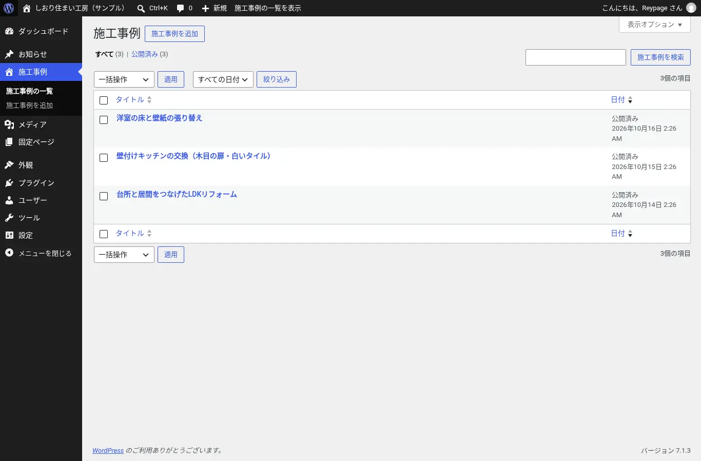
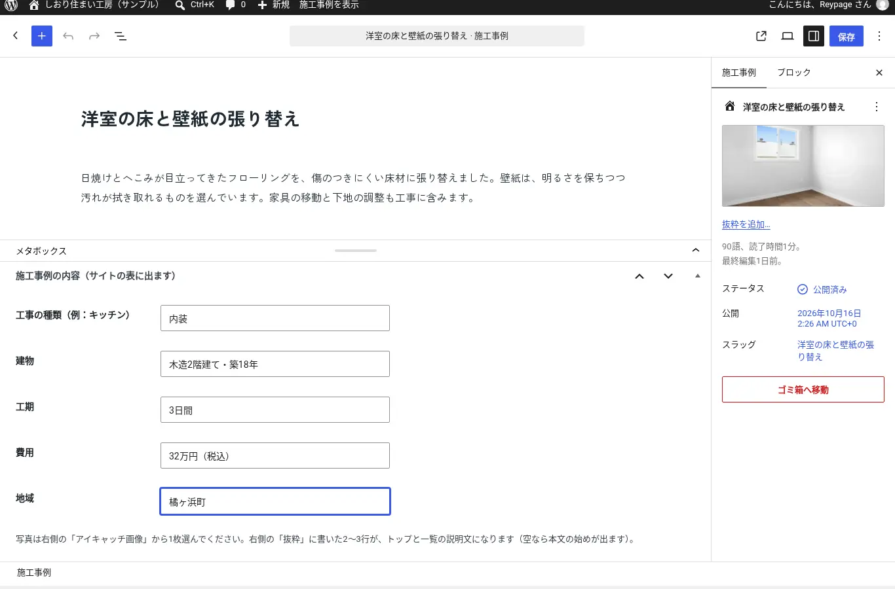
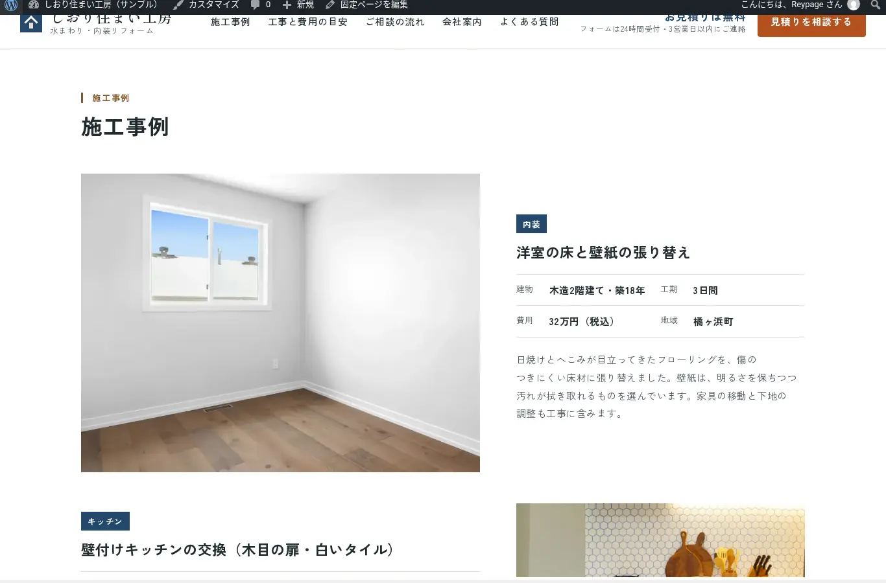
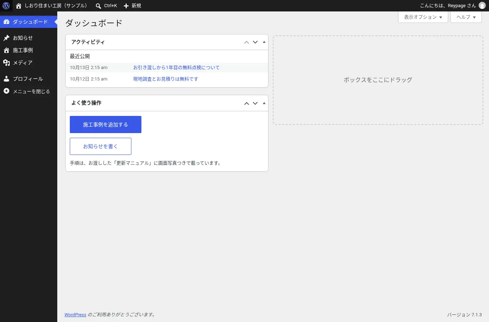

管理画面での更新（WordPressテーマ版）
このサンプルサイトには、WordPressの自作テーマ版もあります。施工事例とお知らせは、お客様が管理画面から追加・修正でき、保存するとサイトに反映されます。有料のプラグインは使っていません。
施工事例の一覧

施工事例の編集

更新後のサイト表示

編集者のアカウントの管理画面

テーマの内容
| 施工事例 | カスタム投稿タイプ（works）。写真はアイキャッチ画像、表の項目はカスタムフィールド |
|---|---|
| お知らせ | 標準の「投稿」を「お知らせ」という名前で表示 |
| お客様のアカウント | 「編集者」の権限。左のメニューはダッシュボード・お知らせ・施工事例・メディア・プロフィールだけになります |
| 使用技術 | PHP、HTML、CSS、WordPressのブロックエディタ（有料プラグインなし） |
操作を試せるデモ
ブラウザの中で動くWordPress（WordPress Playground）で、このテーマを開けます。登録は要りません。管理画面にログインした状態で始まり、閉じると内容は消えます。
開くまで10秒ほどかかります。